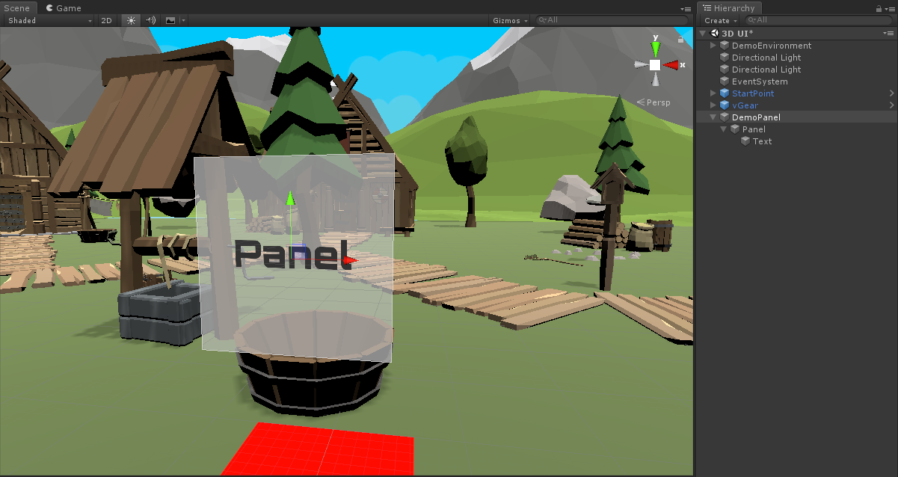
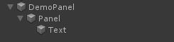
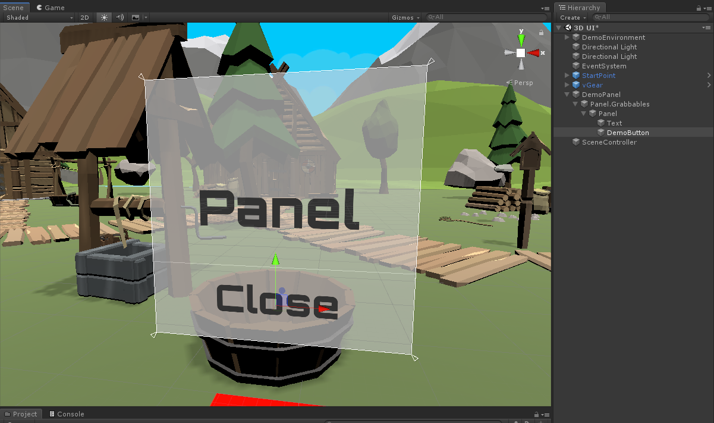
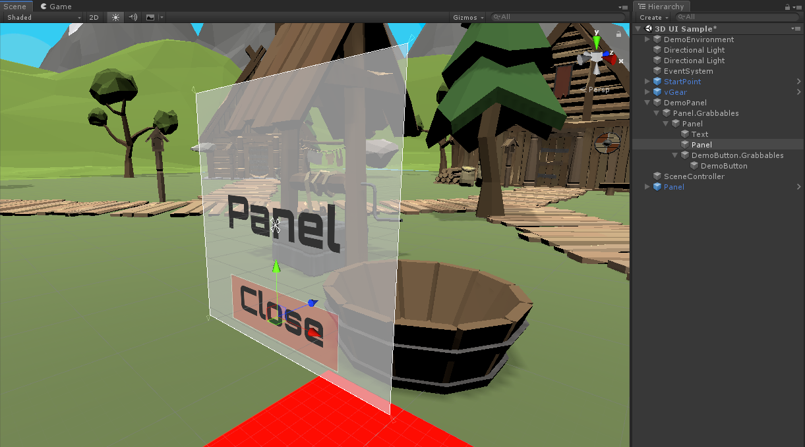

Interact with 3D UI
This chapter introduces the built-in 3D User Interface components in VotanicXR and demonstrate how to quickly create 3D user interface which the user can interact with. VotanicXR provides a flexible 3D UI Toolkit for creating interactive 3D UIs in VotanicXR applications. It is extends the VotanicXR Interactable components so that user can interact with the 3D user interface in VR world using Wand or Glove. Specifically, we introduce the vGear panel and vGear button basic 3D UI components, and demonstrate in the tutorial how to create a simple message dialog panel using the UIPanel prefab.
Tutorial Scene and Related Materials
Go to Assets > Votanic > VotanicXR_Tutorial > Tutorial05_3DUI > Resources and open the scene 3D UI provided.
VotanicXR UI Basic
VotanicXR provides two commonly used UI components, vGear Panel and vGear Button. They are very easy to customize and quick to configure to fit any art style of the application. Moreover, since the UI components extend the VotanicXR Interactable module, users will be able to interact with the UI components with the Wand Interactor.
vGear_Panelis a container to manage the display of the UI element itself as well as its child objects. This component is inherited from thevGear_Interactablesclass. It can be added to GameObjects or Canvas.vGear Buttonadds interactivity to the original Unity UI button to allow it to interact with the Wand Interactor.vGear Buttoncomes with built-in transition effects to theon select,on clickandon disableevent. Developers can easily customize the button properties without any scripting. This component is inherited from thevGear_Interactablesclass. It can be added to GameObjects or Canvas.
Recommended Canvas Configuration
Unlike the typical screen space UI which point and click with a mouse pointer, the UI in VR world should be rendered in world space to allow the user to interact with it using the Wand or VR controllers. The following canvas setting is recommended for creating UI in VR environment.
Canvas Render Mode should be set to
World Space.Using scale (0.001, 0.001, 0.001) in
Rect Transformso that pixels are rendered in 1-to-1 correspondence with millimetre. In the below figure, the Width and Height ofRect Transformis equivalent to (1000 x 1000) mm. You may adjust the scale for the precision.
vGear Panel
vGear_Panel is use for managing the display of the UI panel itself and its child GameObjects. it can be added to both 3D GameObjects and UI Element of Canvas.
Adding vGear Panel Component
Create a 2D UI using Unity canvas and named it
DemoPanel.
Right click on the GameObject
Paneland selectvGear > Component > Panelto add aV Gear_Panel(script)to the canvas.Note: a {gameobject.name}.Grabbables (Panel.Grabbables in this example) will be created and the selected GameObject will be parented to the Grabbables GameObject as illustrated below. The
V Gear_Panel (Script)is added to the selected GameObject (PanelGameObject in this example).Before adding the component After adding the component  In the
V Gear_Panel (Script), scroll down to the[Transition]setting and update[Transition] > Close > Alphavalue to 0. When the panel is closed, it will disappear.In the [Panel Settings], select
Default Open, then the panel will be opened by default when the application starts.
Controlling the vGear_Panel Programmatically
The vGear_Panel can also be configured to open and close using the vGear_Panel.Open() and vGearPanel.Close() API
Create an empty GameObject and name it as
SceneController. Then create a C# script and named it asPanelControllerScriptand attach the script to theSceneControllerGameObject.Add the below code to the
PanelControllerScript.vGear_Panel panel; void Start() { panel = GameObject.Find("DemoPanel/Panel.Grabbables/Panel").GetComponent<vGear_Panel>(); } void Update() { if ((panel != null) && (!panel.isTransiting) && (vGear.Cmd.Received("Grab"))) { if (panel.isOpened) { panel.Close(); } else { panel.Open(); } } }In the play mode, the Panel will toggle open and close when user presses the Grab button.
vGear Button
V Gear_Button (Script), is inherited from the vGear_Interactable class and the vGear_UI class. It can be added to both the 3D gameobjects or UI Element of Canvas. Apart from the default interactions and UI behaviours inherited from the 2 classes, transition effects may also be added to the vGear Button on different button events. The transition effects are available when transitioning, on click, on disable or on select.
Adding vGear Button Component
We will reuse the panel created in the previous section. In the Panel, create a
UI > Textand named it asDemoButton.
Select the GameObject
DemoButton. Then, right click on the GameObjectDemoButtonand selectvGear > Component > Buttonto add the vGear_Button script to the selected GameObject.Note: Same as the vGear Panel, a {gameobject.name}.Grabbables will be created and the selected GameObject will be parented to it. The
V Gear_Button (Script)is added to the selected GameObject.Before adding the component After adding the component Create a
UI > Panelbefore the GameObjectDemoButton.Grabbablesas the background of the button.
In the
V Gear_Button (Script), customized button actions can be added under[Settings] > Interaction, in the same way as you configure the interaction for an Interactable GameObject using Unity Event. In the below example, the button is set to close the panel on click.Interaction Type: Up
Unity Event:
- Object:
Panel (vGear_Panel) - Function:
vGear_Panel.Close
- Object:
The
Box Colliderattached to the vGear Button is the interaction area for the Wand Interactor. Adjust the size of the box collider so that it fits the size of the background of the button.Play the scene and check out the effect. When user press the trigger button using the Wand, the panel will be closed.

vGear Button Transition Effects
Optionally, developer can change the button click, select and disable transition effects in the V Gear_Button (Script) > [Transition] section.
The Transition field includes some parameters to store the transition setting.
| Transition Parameter | Explanation |
|---|---|
| Parameter | The transition method used for the transition, the methods are Time Base and Velocity Base.For time base, the total motion duration equals to acceleration factor plus motion factor plus deceleration factor. For velocity base. The motion factor equals to Maximum speed, acceleration factor and deceleration factor equal to acceleration and deceleration respectively. |
| Transition Factor | The motion factor for the corresponding transition method used. |
| Acceleration Factor | Transition accelerating value for corresponding transition method used. |
| Deceleration Factor | Transition decelerating value for corresponding transition method used. |
| Unscaled Delta Time | Using unscaled delta time if true. |
The transition effects for the button include Movement, Rotation, Scaling, Color and Alpha. In each transition, these five properties can be configurated. The below table lists the effects of these properties with examples demonstrating the effects.
| Transition Property | Effect | Example |
|---|---|---|
| Movement | Offset the position of the GameObject according to (X, Y, Z) value |  |
| Rotation | Offset the rotation of the GameObject according to (X, Y, Z) value |  |
| Scaling | Enlarge or contract the GameObject according to (X, Y, Z) value. Example: (0,0,0) is the original size. (1,1,1) is double the size. |
|
| Color | Change the color of the button |  |
| Alpha | Change the opacity of the button |  |
VotanicXR UI Panel Prefab
VotanicXR has a panel prefeb to create a simple panel quickly.
In the tutorial scene, right click in the
Hierarchywindow. Then selectvGear > GameObject > UIPanel. This will create aPanelGameObject in the scene.The newly created
Panelprefab hasPanelandButtonGameObjects. The text message can be changed in thePanel > Text, and the button text can be changed in thePanel > Button > Button.The
vGear_Panelclass has four public functions, which areOpen(),Close(),Enable()andDisable(), to control the behaviour of the panel. TheOKbutton is pre-configured to invoke theClose()function of interaction typeUp. Developer can register other events to theUnity Event (Parameter)if required.In the play mode, the panel will be closed when the Wand click the
OKbutton.